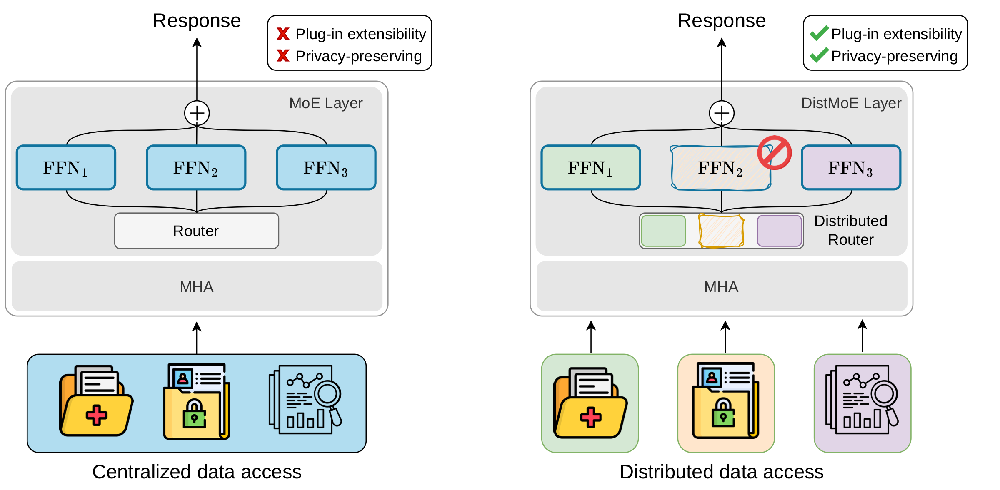
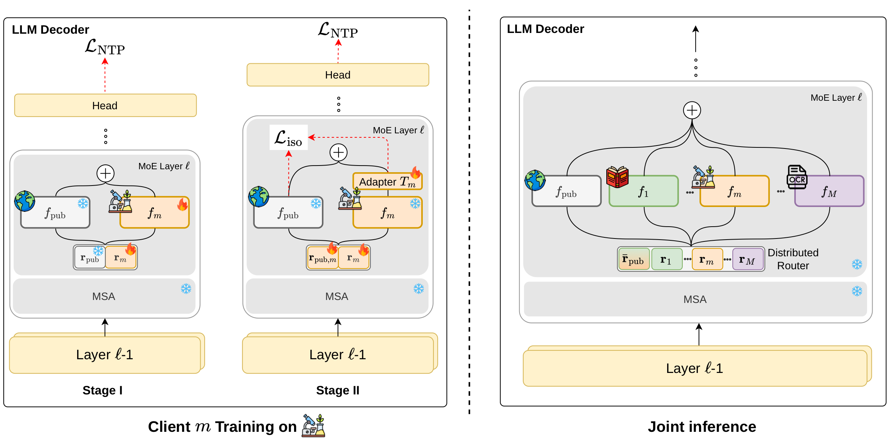
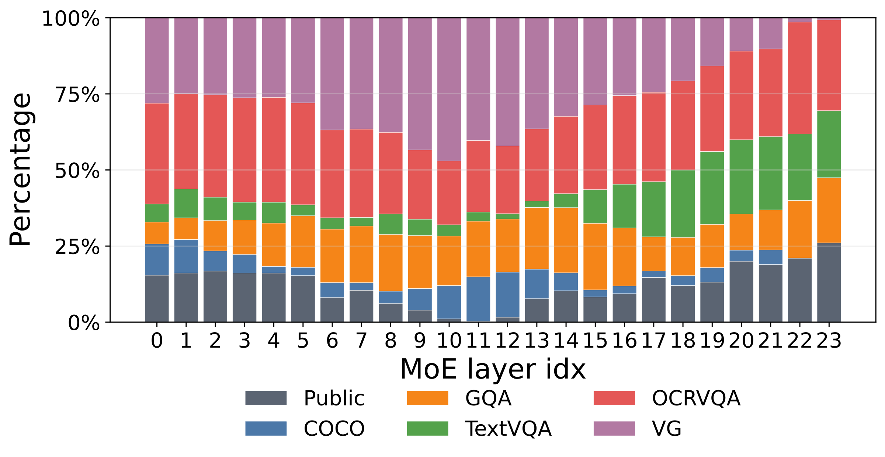
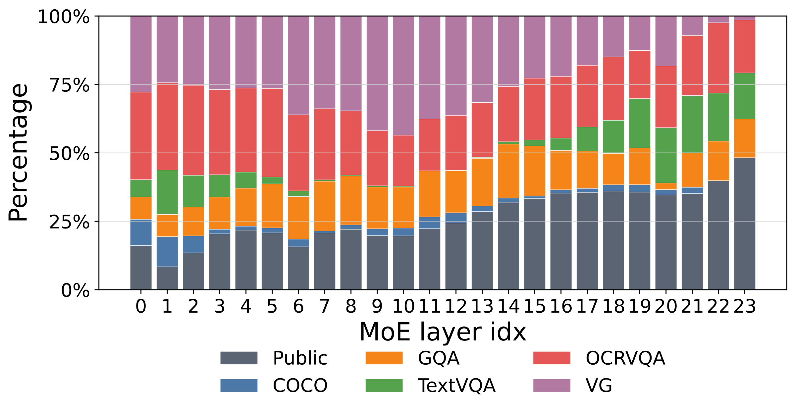

Abstract
Multimodal Large Language Models (MLLMs) have shown strong multimodal instruction-following ability, but adapting them to diverse visual-language domains typically assumes centralized data access and costly joint training. This is restrictive when data is distributed across private, domain-specific, or permission-limited clients. To this end, we propose DistMoE, a mixture-of-experts (MoE) approach for distributed visual instruction tuning. In each layer of the language decoder it augments the public feedforward network (FFN) with a client-specific private FFN expert, with the goal to acquire domain-specific knowledge. However, independent expert training causes the private FFNs to learn representations of different scale and magnitude, making merging the experts difficult. To reduce client-specific drift, we introduce a public-anchored expert composition stage that updates only routers and lightweight private projection adapters on a mix of local client data and public data, via an isotropic regularization loss, making it private-data rehearsal-free: each client reuses only its own local data, and private data are never pooled, shared, or jointly revisited across clients. During inference, DistMoE performs modular routing over public and private experts, enabling token-wise domain composition without explicit domain labels. Experiments across diverse visual-language benchmarks show that DistMoE enables flexible expert reuse, effective domain adaptation, and competitive performance while preserving modular control over client-specific knowledge.
Method

Expert knowledge acquisition
Each client trains a two-expert MoE: a frozen public FFN and a private FFN initialized from it. Only the private expert and its router are updated, on local data.
Public-anchored composition
With experts frozen, a lightweight linear adapter and the router are recalibrated. An isotropic Gaussian loss makes each client's residual to the public expert comparable across clients.
Modular sparse routing
Calibrated experts from all clients are merged into one MoE and routed token-wise with top-k. Any expert can be added or disabled at inference, with no retraining.
Why residuals?
At inference, the routed output can be written as the public expert plus the routing-weighted client residuals:
A private expert therefore influences the output through two factors: how much the router selects it (αm) and how far its residual moves the representation (Δm). If independently trained experts produce residuals of different scales, the larger one dominates regardless of its routing weight. DistMoE anchors every client to the same public expert and the same isotropic Gaussian target, so that the learned routing weights, not representation magnitudes, decide which expert matters.
Gauge-fixed composition
Each client recalibrates its own two-way router, whose logits are only defined up to a shared shift. Composing clients through their private-vs-public log-odds, with the public logit anchored at zero, preserves the public–private balance each client learned. This changes inference only and needs no retraining.
Results
Distributed visual instruction tuning
Five private clients (COCO, GQA, OCRVQA, TextVQA, Visual Genome) are composed on top of a public MoE-LLaVA backbone. Below, a selection of rehearsal-free distributed methods; the paper also reports centralized and rehearsal-based upper bounds.
| Method | VQAv2 | GQA | SQAI | VQAT | POPE | MME | SEED | LLaVAW | MM-Vet |
|---|---|---|---|---|---|---|---|---|---|
| Qwen-1.8B | |||||||||
| Model Soup (wtd) | 69.18 | 53.46 | 60.21 | 41.18 | 84.84 | 1160.35 | 54.06 | 51.10 | 14.70 |
| BTM | 69.73 | 53.81 | 60.66 | 41.87 | 85.46 | 1167.92 | 54.31 | 52.00 | 14.80 |
| BTX | 69.46 | 54.16 | 60.43 | 41.52 | 85.15 | 1174.63 | 54.63 | 52.90 | 14.90 |
| FlexOlmo | 70.01 | 54.26 | 60.85 | 41.70 | 85.98 | 1176.35 | 54.91 | 52.20 | 15.00 |
| DistMoE-LoRA | 65.80 | 50.51 | 59.30 | 33.69 | 85.68 | 995.61 | 53.34 | 73.50 | 24.40 |
| DistMoE | 70.27 | 55.35 | 61.03 | 42.66 | 86.38 | 1188.56 | 55.11 | 59.90 | 15.10 |
| Phi-2.7B | |||||||||
| Model Soup (wtd) | 65.92 | 52.34 | 59.89 | 39.76 | 74.43 | 1067.26 | 54.05 | 43.20 | 14.40 |
| BTM | 66.53 | 52.56 | 60.56 | 40.76 | 72.80 | 1106.64 | 52.82 | 41.70 | 16.30 |
| BTX | 67.80 | 52.67 | 60.24 | 40.53 | 73.62 | 1096.48 | 51.43 | 44.40 | 17.00 |
| FlexOlmo | 70.03 | 54.84 | 62.77 | 41.63 | 74.98 | 1193.71 | 58.79 | 52.00 | 18.30 |
| DistMoE-LoRA | 42.89 | 32.84 | 69.52 | 31.77 | 80.84 | 862.60 | 59.38 | 75.30 | 23.80 |
| DistMoE | 71.31 | 56.53 | 66.34 | 41.87 | 80.50 | 1291.41 | 59.96 | 55.90 | 19.80 |
Bold marks the best result among the methods shown, per backbone. Single runs; three-seed results are reported in the paper appendix.
Where do tokens go?
Compared with FlexOlmo, DistMoE routes more mass to the shared public expert, especially in later layers, while still activating private experts when useful: private experts act as calibrated shifts around a public anchor rather than replacing it.


Top-4 routing mass per MoE layer on MME with Qwen-1.8B.
Analysis
Residual geometry. After Stage-I, private experts drift along their own low-dimensional subspaces at mismatched scales. Anchoring all adapters to the shared public expert removes most of this mismatch, and the isotropic loss further aligns the shape of the residual distributions across clients.
Flexibility. Removing any single client expert at inference keeps the model well above the public backbone, so DistMoE does not depend on any one private expert.
Cost. The overhead over FlexOlmo comes from one linear adapter per layer. Because adapters only run for the experts selected by top-k, inference cost is set by the routing budget rather than the number of clients.
BibTeX
@inproceedings{singha2026distmoe,
title = {DistMoE: Private-data Rehearsal-free Routing in Mixture-of-Experts
for Distributed Instruction Tuning},
author = {Singha, Mainak and Biondi, Niccol{\`o} and Ricci, Elisa and Roy, Subhankar},
booktitle = {Advances in Neural Information Processing Systems (NeurIPS)},
year = {2026}
}